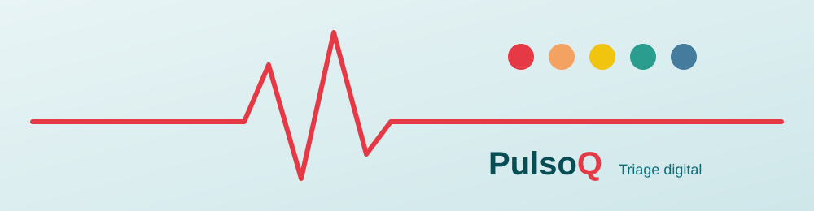

¿Por qué usar PulsoQ?
El triage en papel es lento y propenso a errores. PulsoQ digitaliza el proceso para que ningún caso grave quede esperando más de lo necesario.
⏱
Menos espera
La clasificación se hace en minutos, sin formatos en papel.
🚦
Prioridad clara
Cada paciente recibe un color según su nivel de gravedad.
📡
Tiempo real
Médicos y enfermería ven la misma fila siempre actualizada.
📋
Historial ordenado
Los registros quedan guardados para consulta y reportes.
Contacto
¿Quieres implementar PulsoQ en tu hospital? Escríbenos.
- 📧 contacto@pulsoq.mx
- 📞 618 000 0000
- 📍 Durango, Dgo., México